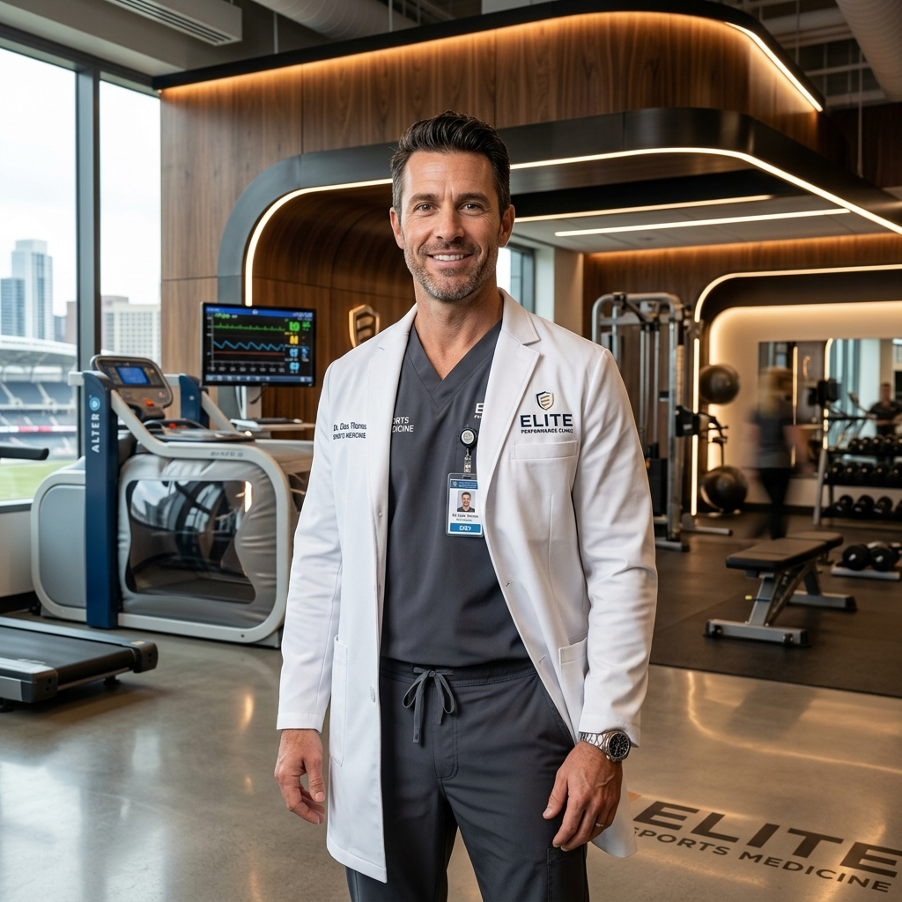
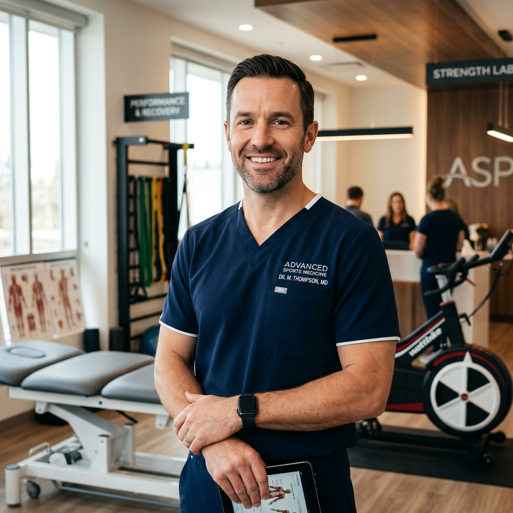

Desbloqueie o seu
Ápice Físico e Metabólico
Acompanhamento médico individualizado de alto padrão, focado em hipertrofia, emagrecimento saudável, longevidade ativa e reabilitação de lesões.


Ciência, Empatia e Foco nos Seus Resultados
Eu acredito que a Medicina do Esporte não se restringe a atletas profissionais. Minha missão é democratizar a alta performance física e mental para qualquer pessoa que deseja viver em sua melhor versão.
Com mais de uma década de experiência no campo da saúde metabólica e desempenho esportivo, integro ciência de ponta, exames de alta precisão e uma abordagem profundamente humana. Cada plano que desenvolvo é 100% individualizado, desenhado para se encaixar na sua rotina e superar suas metas de saúde.
Foco na Causa Raiz
Nada de fórmulas prontas. Investigamos a fundo sua saúde metabólica, hormonal e genética.
Prevenção Ativa
Prevenir lesões e otimizar processos biológicos para estender sua longevidade produtiva.
Formação e Qualificações
- Graduação em Medicina pela Faculdade de Medicina da USP
- Residência Médica em Medicina do Exercício e do Esporte no HC-FMUSP
- Membro Titular da Sociedade Brasileira de Medicina do Exercício e do Esporte (SBMEE)
- Pós-Graduação em Nutrologia e Fisiologia do Exercício
Especialidades Focadas em Sua Evolução
Pilares estratégicos desenvolvidos com base na ciência médica esportiva para atender aos mais exigentes objetivos de saúde, estética e performance.
Performance Esportiva & Hipertrofia
Planejamento personalizado visando otimização metabólica, melhora de força, rendimento e ganho de massa muscular com acompanhamento hormonal ético e seguro.
- Aumento de VO2 Máx e resistência
- Otimização hormonal fisiológica
- Acompanhamento de ganho de massa magra
Emagrecimento Saudável
Protocolos baseados no controle da fome, modulação hormonal e aceleração metabólica sustentável, garantindo que você perca gordura sem perder massa muscular.
- Quebra de platôs de perda de peso
- Preservação de massa magra ativa
- Tratamento da resistência à insulina
Prevenção e Reabilitação de Lesões
Avaliação biomecânica e muscular profunda para detectar desequilíbrios antes que virem lesões. Reabilitação acelerada com foco em retorno esportivo seguro.
- Análise de desequilíbrios musculares
- Tratamento de tendinopatias e dores
- Protocolos de Return-to-Play rápidos
Saúde, Longevidade e Vigor
Modulação de hábitos corporais apoiada em exames laboratoriais amplos, bioimpedância e eletrocardiografia para assegurar vitalidade nas próximas décadas.
- Gerenciamento de estresse e sono
- Prevenção de doenças cardiovasculares
- Suplementação injetável personalizada
O Que Esperar do Acompanhamento
Muito mais que uma simples consulta. Um ecossistema completo focado em direcionar você ao seu objetivo físico com total segurança e suporte.
Acompanhamento Médico Individualizado
Cada corpo responde de maneira única aos estímulos. Seu plano de treino, dieta e suplementação é montado especificamente para sua bioquímica, rotina profissional e objetivos.
- Consultas detalhadas e sem pressa
- Acesso fácil para dúvidas pós-consulta
- Reavaliações periódicas para ajuste de rota
Resultados Consistentes e Seguros
Esqueça estratégias extremas que drenam sua energia ou colocam suas articulações em risco. Nosso foco é gerar transformações que você consegue manter a longo prazo, com vitalidade e disposição.
- Metas tangíveis e validadas cientificamente
- Prevenção total de efeitos rebote comuns
- Aumento substancial da energia diária
Diagnóstico de Alta Precisão
Bioimpedância segmentada profissional para entender a distribuição exata de gordura e músculo.
Protocolo Baseado em Evidências
Sem modismos, apenas o que a ciência médica valida como seguro e eficaz para seu organismo.
Integração Multidisciplinar
Alinhamento direto com seu treinador ou nutricionista para garantir sinergia absoluta no plano.
Vidas Transformadas pela Medicina
Veja o relato de quem decidiu priorizar a saúde metabólica e hoje colhe os frutos de uma vida de alta performance e bem-estar.
Pronto Para Conquistar a Sua Melhor
Versão Física?
As vagas para o acompanhamento personalizado são limitadas para podermos dar atenção máxima a cada paciente. Fale agora com nossa assessoria e garanta o seu horário.
Falar Conosco no WhatsAppResposta rápida em menos de 10 minutos (durante horário comercial).
Esclareça as Suas Objeções
Selecionamos as principais perguntas de novos pacientes para que você se sinta 100% seguro ao iniciar seu acompanhamento.
Absolutamente não. Grande parte dos meus pacientes são praticantes de atividades físicas amadoras, empresários e pessoas comuns que buscam melhorar a composição corporal (perda de gordura e ganho de massa), otimizar os níveis de energia diários e envelhecer com máxima saúde e autonomia física.
A primeira consulta é um processo aprofundado com cerca de 1 hora de duração. Nela, realizamos uma anamnese completa (avaliação de rotina, sono, estresse, alimentação, histórico de lesões), exame físico geral, bioimpedância segmentada de alta precisão (para mapeamento de massa muscular e gordura) e a solicitação de uma bateria profunda de exames laboratoriais.
Os atendimentos na clínica são exclusivamente particulares para garantir o tempo de consulta e a atenção minuciosa necessária a cada caso. No entanto, fornecemos recibo detalhado com todos os códigos necessários (CRM/RQE) para que você solicite o reembolso integral ou parcial junto ao seu plano de saúde.
É um exame tecnológico indolor que mede a resistência corporal à passagem de uma corrente elétrica de baixa intensidade. Diferente das balanças comuns, a nossa máquina profissional mapeia os percentuais exatos de água, gordura e massa muscular segmentados por membro (braço esquerdo/direito, perna esquerda/direita e tronco), permitindo avaliar desequilíbrios musculares com precisão cirúrgica.
Depende muito de seu objetivo. Para reabilitação de lesões específicas ou perda leve de peso, resultados sólidos ocorrem entre 2 a 3 meses. Para programas de hipertrofia severa, transição metabólica de alta performance ou longevidade integrada, recomendamos um ciclo contínuo de reavaliações a cada 3 meses para ajustar dosagens e estratégias.